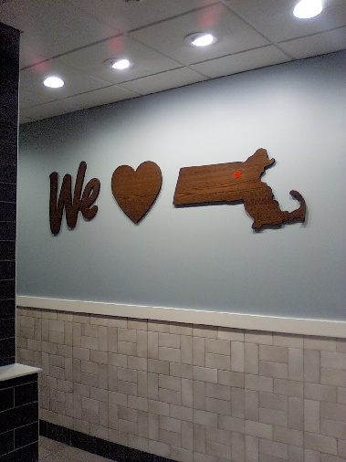

Affilate statement: We may have interest, with companies or products mentioned on this blog.2025 March Blog Posts - 2025年三月部落格文章
TOC starts here TOC ends here --------------- #0100 Affilate statement: We may have interest, with companies or products mentioned on this blog. 2025-03-06 1102 by Ball Punyin on lemonmama.com#0100 - Wall Graph of Your Life with A Friend of Mine Musty Mustard
A friend of mine, Musty Mustard. Musty Mustard is working on wall graph of your life. And wrenching Musty's brain. Especially around shared work income. And shared expenses. Shared with Musty's spouse. Because at this time it makes so much difference. Without spouse income, actually, Musty and spouse can't cover the expenses. And Musty has this urge to cover the expenses. Wow. Turns out Musty is not experienced at keeping number money records. Not experienced at bookkeeping. The numbers are cold and hard. And yet Musty's mind doesn't want them to be. Subconsciously wants them to work out somehow to be in Musty's favor. So Musty Mustard struggles. Mind struggles staring at the spreadsheet. Trying to figure out how to group/add/subtract the numbers of income and expenses. Make the numbers come out in Musty's favor. However come to find. Musty Mustard can't control the numbers the moment of putting them on the spreadsheet and looking at them. Feels so powerless. So Musty gets in a funk many minutes, maybe an hour or three. But then now. Musty Mustard thinking. Ok look at the numbers. Just Musty's work income only. And but the entire family's expenses. And Musty sees how the income is not enough to cover the expenses. Right. And then Musty sees how Musty's investment income is. Investment income is high now. But then Musty knows the investment income can actually go NEGATIVE on any given month or year (or decade). Musty saw investment income go negative before. However that's not the point. Of the numbers. At the moment Musty is putting the numbers on the spreadsheet. And looking at them. The point of looking at them is just to see them how they accurately are. No judgement for a moment. Then after put the numbers there and graph them. Then after that make a judgement and that will be good. After Musty looks at the numbers then it may become clear what Musty needs to do. Likely it will become clear Musty Mustard will need to increase investing, and decrease expenses, and increase work income. ~~~ --------------- #0099 Affilate statement: We may have interest, with companies or products mentioned on this blog. 2025-03-03 1919 by Morgan Jassen on lemonmama.comWe Heart Massachusetts
We heart massachusetts seen at Wendy's in Maynard ma.  ~~~ --------------- #xxxx 2025-03-xx xxxx by Rowdy Pepper on lemonmama.com#xxxx - Blah Blah Blah Title Goes Here - Episodic Series xxx
First Sentence here... Body text goes here... More Body text... More Body text... In conclusion, ... ~~~ Copyright © under a triple license to the individual author and to lemonmama.com and to MIT License.
{kind=link}